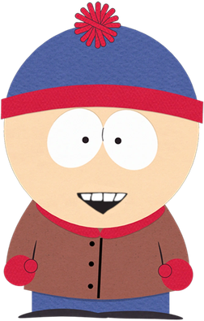
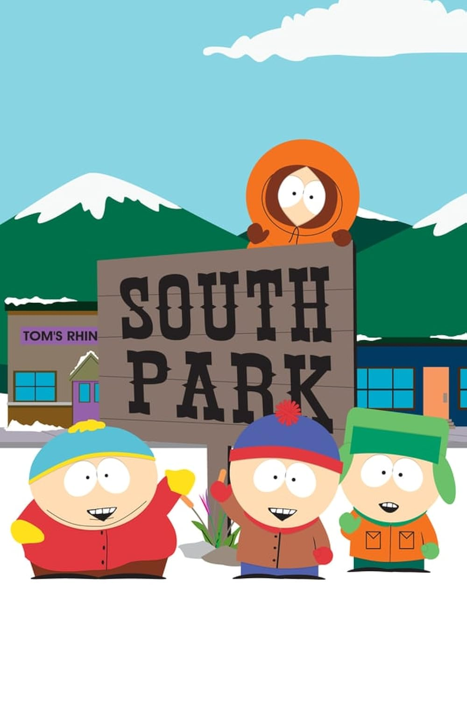
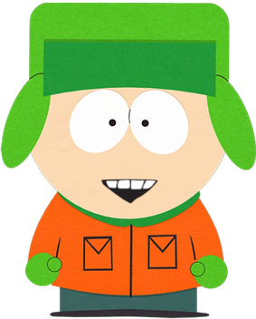
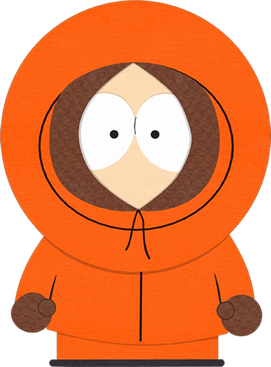

Stan Marsh

Kék-piros bojtos sapkát visel. Általában ő a józanabb a csapatból.

A South Park egy amerikai felnőtt animációs sorozat, amelyet Trey Parker és Matt Stone alkotott. Az első epizód 1997-ben jelent meg a Comedy Centralon.
A történet a Colorado állambeli South Park városában játszódik, ahol négy kisfiú mindennapjai során a legfurcsább dolgok történnek. A sorozat humora szatirikus, és felnőtteknek készült.

Kék-piros bojtos sapkát visel. Általában ő a józanabb a csapatból.

Zöld sapkát visel, ő a csapat lelkiismerete. Stan legjobb barátja.

Önző és hangos fiú, mindig őrült terveket eszel ki.

Narancssárga kapucnit visel, ezért alig érteni, mit mond.
| Évad | Év | Megjegyzés |
|---|---|---|
| 1. évad | 1997 | A sorozat indulása |
| 2. évad | 1998 | Egyre népszerűbb lett |
| 3. évad | 1999 | |
| 4. évad | 2000 | |
| 5. évad | 2001 | |
| 6. évad | 2002 | |
| 7. évad | 2003 | |
| 8. évad | 2004 | |
| 9. évad | 2005 | |
| 10. évad | 2006 | |
| 11. évad | 2007 | |
| 12. évad | 2008 | |
| 13. évad | 2009 | |
| 14. évad | 2010 | |
| 15. évad | 2011 | |
| 16. évad | 2012 | |
| 17. évad | 2013 | |
| 18. évad | 2014 | |
| 19. évad | 2015 | |
| 20. évad | 2016 | |
| 21. évad | 2017 | |
| 22. évad | 2018 | |
| 23. évad | 2019 | |
| 24. évad | 2020 | Járvány témájú különkiadások |
| 25. évad | 2022 | |
| 26. évad | 2023 | |
| 27. évad | 2025 | Csak 5 epizódos évad |
| 28. évad | 2025 | Csak 5 epizódos évad |
| 29. évad | 2026 | Jelenleg is megy |